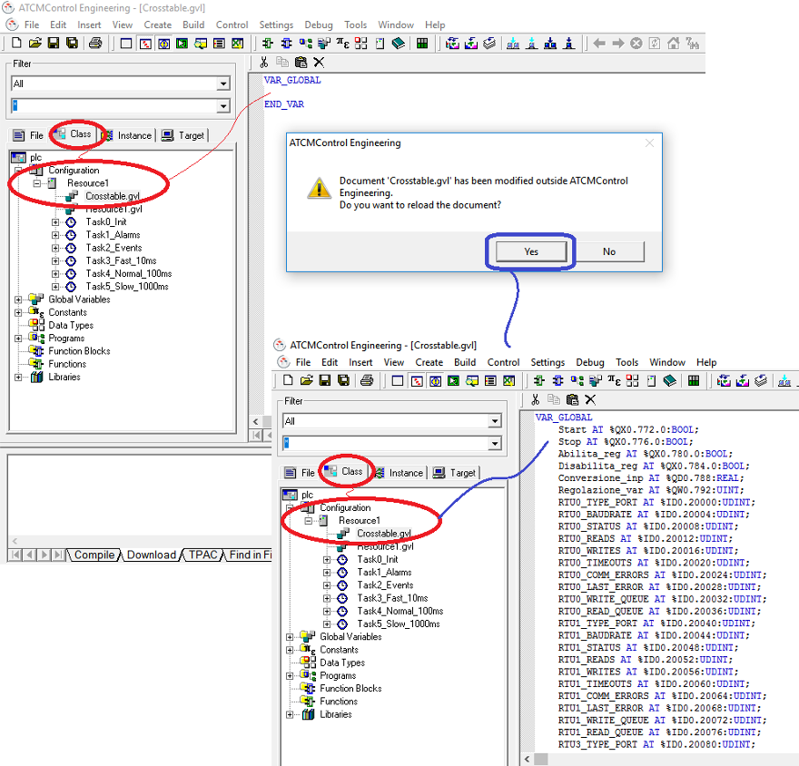
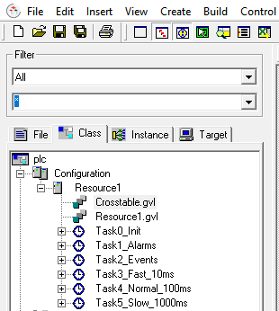

Il software PLC viene lanciato attraverso il pulsante della Crosstable.
Le variabili presenti nella Crosstable corrispondono a quelle del software PLC. L’aggiornamento della lista delle variabili può avvenire in 3 modi:
Premendo il tasto della Crosstable
Effettuando il Build della parte HMI:
Effettuando il Deploy della parte HMI:
Nell’ambiente ATCMControl ci saranno le variabili della Crosstable che sono state importate nel progetto PLC.

Espandendo “Configuration” e “Resource1” troviamo i file “Crosstable.gvl”, “Resource1.gvl” e i vari Task.

Il file Crosstable.gvl è il file che contiene tutte le variabili globali di scambio tra HMI e PLC. Questo file deve essere utilizzato solamente in lettura per sapere i nomi delle variabili e non deve essere mai modificato.
Nel file Resource1.gvl si dichiarano tutte le variabili globali del PLC. In questo file si possono inserire variabili che non servono all’ambiente HMI.
Ci sono 6 Task che hanno funzionalità e tempi di ciclo differenti:
Task0_Init: viene fatto girare solamente all’avvio del PLC e per questo motivo ha priorità assoluta. Solitamente viene utilizzato per inizializzare le variabili.
Task1_Alarms: ha la priorità su tutti gli altri task. Si avvia nel momento in cui si scatena l’allarme e il programma inserito nel Task viene eseguito una sola volta. Il Task1_Alarms si riavvierà al verificarsi di ogni nuova condizione di allarme.
Task2_Events: ha la priorità su tutti gli altri task escluso il Task1_Alarms. Si avvia nel momento in cui si scatena l’evento e il programma inserito nel Task viene eseguito una sola volta. Il Task2_Events si riavvierà al verificarsi di ogni nuova condizione di evento.
Task3_Fast_10ms: questo task gira ogni 10ms.
Task4_Normal_100ms: questo task gira ogni 100ms.
Task5_Slow_1000ms: questo task gira ogni 1000ms
NOTA: è consigliabile utilizzare il Task4_Normal_100ms per la maggior parte dell’applicazione.
All’interno di ogni Task si trova almeno un programma, ad esempio se si espande il Task5_Slow_1000ms si trova il programma Slow_Inst1 dove è possibile implementare, in questo caso nel linguaggio ST, parte della propria applicazione. In questo modo è possibile scrivere del codice all’interno dei programmi presenti in ogni Task.